A compact mechanical assembly, opened for inspection.
This project combines seven custom part files with three referenced Toolbox part definitions. The two transverse gears and twelve flange fasteners bring the assembled total to 21 instances. The documentation follows each source part from its visible geometry and feature history to its position in the assembly.
The component names below describe the observed shapes and mate relationships. Functional terms such as carrier, side gear and coupling collar are engineering interpretations of the model, while file names, configurations, counts and feature operations are directly recorded from SolidWorks.
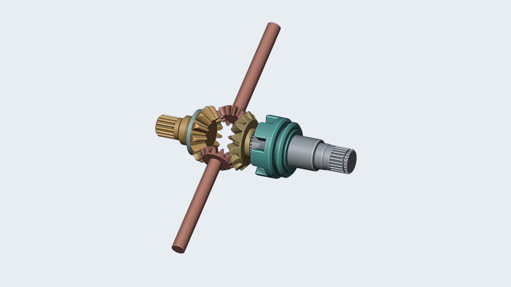
See the whole assembly.
36 seconds · 1920 × 1080 · 24 frames/s · silent presentation with on-screen chapter descriptions. Camera motion and component separation illustrate the model; gear rotation is not simulated.
- 00:00–00:09 — complete assembly orbit
- 00:09–00:19 — exploded arrangement and return
- 00:19–00:28 — internal components with enclosure hidden
- 00:28–00:36 — complete assembly, final view
The supplied AVI was 1412 × 368 pixels, approximately six seconds long, with geometry clipped by the viewport. This film is rendered afresh from the model, with a fitted camera, consistent component colors and deliberate inspection views.
Download the full-HD filmEvery component, accounted for.
Seven custom parts appear once each. The miter gear appears twice, and the flange bolt and nut appear six times each. The envelope column is the approximate axis-aligned bounding box in each part's own coordinate system, in millimeters. It is not a manufacturing dimension or an overall assembly measurement.
| Item | Source part | Description | Qty | Original material | Local XYZ envelope |
|---|---|---|---|---|---|
| 01 | Part1 | Carrier housing | 1 | Cast Carbon Steel | 62.00 × 96.00 × 96.00 mm |
| 02 | Part2 | Flanged cover with dog features | 1 | Not specified | 36.00 × 94.00 × 94.00 mm |
| 03 | Part3 | Double-ended splined shaft | 1 | Cast Carbon Steel | 116.50 × 32.00 × 32.00 mm |
| 04 | Part4 | Side gear with integral splined stub | 1 | Cast Carbon Steel | 58.10 × 57.76 × 58.19 mm |
| 05 | Part5 | Internally splined side gear | 1 | Cast Carbon Steel | 21.10 × 57.99 × 58.19 mm |
| 06 | Part6 | Dog coupling collar | 1 | Not specified | 58.00 × 32.06 × 58.00 mm |
| 07 | Part7 | Annular spacer / thrust washer | 1 | Not specified | 44.00 × 44.00 × 3.35 mm |
| 08 | straight miter gear_iso | Transverse miter gear with stem | 2 | Not specified | 110.64 × 36.66 × 36.66 mm |
| 09 | hex flange bolt small_iso | M6 flange bolt | 6 | Not specified | 31.80 × 13.60 × 13.60 mm |
| 10 | hex flange nut gradea_iso | M6 flange nut | 6 | Not specified | 14.20 × 14.20 × 6.00 mm |
Download the component schedule (CSV)
In the original source, four custom parts carry Cast Carbon Steel and six definitions have no material specified. The project copies now use the complete proposed material set documented below; the original labels remain here for traceability.
Materials assigned to the project CAD.
A typical material set has been assigned to all ten part definitions in the separate project repository. These are proposed design choices added during this documentation revision, not a claim about the original model or a manufactured gearbox.
| Part | Assigned CAD material | Reason for selection | Proposed condition / next check |
|---|---|---|---|
| Part1 | Ductile iron - ASTM A536 65-45-12 | Cast carrier body; machinable housing and support features. | As-cast / machined; verify casting and fatigue design. |
| Part2 | AISI 4140 - quenched and tempered | Cover combines the casing flange with projecting dog features; alloy steel is proposed for those loaded interfaces. | Quench and temper; specify final hardness after load review. |
| Part3 | AISI 4140 - quenched and tempered | Splined shaft; toughness and a heat-treatable steel for torsion and bending. | Quench and temper; review spline surface treatment. |
| Part4 | AISI 8620 - carburizing steel | Side gear and integral spline; case-hardening steel for wearing surfaces with a tougher core. | Carburize, quench and temper; case depth and finishing to be designed. |
| Part5 | AISI 8620 - carburizing steel | Side gear with internal spline; proposed wear-resistant case on gear and spline surfaces. | Carburize, quench and temper; control bore and tooth distortion. |
| Part6 | AISI 4140 - quenched and tempered | Dog collar; proposed toughness for the engagement features. | Quench and temper; review local hardening once operation is established. |
| Part7 | C93200 bearing bronze | Spacer interpreted as a thrust washer; bearing bronze for a lubricated sliding interface. | Machined bronze; verify pressure, speed, lubrication and axial clearance. |
| straight miter gear_iso | AISI 8620 - carburizing steel | Both transverse gears; same case-hardening family as the side gears. | Carburize, quench and temper; verify stem strength and gear contact. |
| hex flange bolt small_iso | Carbon steel - fastener baseline | Nominal carbon-steel CAD material for six M6 flange bolts. | Purchase target: property class 8.8; confirm preload and joint loads. |
| hex flange nut gradea_iso | Carbon steel - fastener baseline | Nominal carbon-steel CAD material for six M6 flange nuts. | Purchase target: property class 8; confirm compatible certified fasteners. |
The carrier uses ductile iron; the cover uses alloy steel because its modeled dogs may participate in engagement. That distinction follows the observed geometry. A load specification is needed to confirm both choices.
Material basis
- Dura-Bar: 65-45-12 ductile iron lists housings and power-transmission applications and describes its machinability.
- Atlas Steels: alloy steel bar identifies 4140 for shafts and axles. Its 4140 data sheet describes quenched-and-tempered supply conditions.
- Elwood / UNISTEEL: 8620 alloy steel identifies carburized gears and shafts as applications.
- Wieland Concast: C93200 bearing bronze includes thrust washers among its typical uses.
The three Toolbox-derived files in the working repository use a DG_ filename prefix and have their Toolbox flag cleared. The source names used in this report remain as traceable identifiers.
What is stored in the CAD library
The project includes its own SolidWorks material database. It stores the selected material names and nominal density estimates: 7,100 kg/m³ for ductile iron, 7,850 kg/m³ for steels and 8,910 kg/m³ for bronze. These rounded values support preliminary CAD mass estimates only. Strength, fatigue and thermal properties are deliberately unpopulated rather than copied from unrelated library grades.
Heat-treatment descriptions and fastener purchase classes are proposed specifications. Assigning a CAD material does not apply a physical heat treatment, certify a fastener class or validate a load capacity. No final hardness, carburized case depth, bolt torque or factor of safety is asserted.
Component 01 / Part1 / Quantity 1
Carrier housing
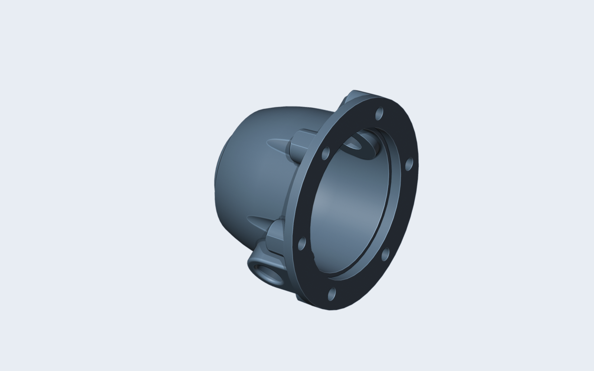
The main enclosing body locates the cover, side-gear journal, spacer and transverse gear stems. The six-hole flange provides the bolted interface to Part2.
Assigned project material: Ductile iron - ASTM A536 65-45-12. See selection basis and proposed condition.
How it was modeled
A revolved body establishes the casing profile. Bosses and cuts form the flange, openings and support features. A six-instance circular pattern, a mirror and successive fillets complete the repeated and softened geometry.
Assembly interfaces
Concentric mates connect it to Part2, Part4 and both miter gears. Part7 is located against it by a coincident mate.
- Original source material
- Cast Carbon Steel
- Approximate local X × Y × Z envelope
- 62.00 × 96.00 × 96.00 mm
Inspect the source modeling features
| Source feature | API feature type |
|---|---|
| Revolve1 | Revolution |
| Boss-Extrude1 | ICE |
| Fillet1 | Fillet |
| Boss-Extrude2 | ICE |
| Boss-Extrude4 | ICE |
| Cut-Extrude1 | ICE |
| Cut-Extrude2 | ICE |
| Fillet2 | Fillet |
| Fillet3 | Fillet |
| CirPattern1 | CirPattern |
| Fillet4 | Fillet |
| Fillet5 | Fillet |
| Fillet6 | Fillet |
| Mirror1 | MirrorPattern |
| Cut-Extrude3 | ICE |
| Cut-Extrude4 | ICE |
| Fillet7 | Fillet |
| Fillet8 | Fillet |
Names and types come from the source feature tree. Sketches, reference planes, folders and repeated dimension listings are omitted from this compact view.
Component 02 / Part2 / Quantity 1
Flanged cover with dog features
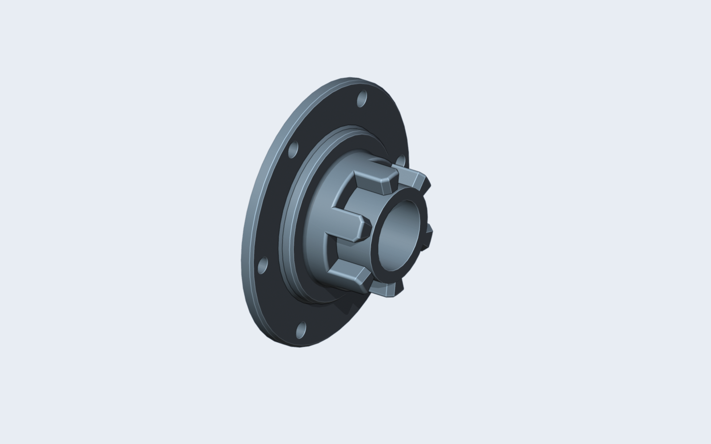
Closes the housing at its six-bolt flange. Its central opening locates the shaft and internally splined side gear; the projecting dogs face the separate collar.
Assigned project material: AISI 4140 - quenched and tempered. See selection basis and proposed condition.
How it was modeled
A revolved base is refined with cuts, a six-instance circular pattern, chamfers and a fillet. The visible flange, raised hub and interrupted dog features are retained from the source model.
Assembly interfaces
Concentric with Part1, Part3 and Part5. Coincident relationships locate the cover against the housing and the collar relative to the cover.
- Original source material
- Not specified
- Approximate local X × Y × Z envelope
- 36.00 × 94.00 × 94.00 mm
Inspect the source modeling features
| Source feature | API feature type |
|---|---|
| Revolve1 | Revolution |
| Chamfer1 | Chamfer |
| Cut-Extrude1 | ICE |
| Cut-Extrude2 | ICE |
| CirPattern1 | CirPattern |
| Chamfer2 | Chamfer |
| Fillet1 | Fillet |
| Chamfer3 | Chamfer |
Names and types come from the source feature tree. Sketches, reference planes, folders and repeated dimension listings are omitted from this compact view.
Component 03 / Part3 / Quantity 1
Double-ended splined shaft
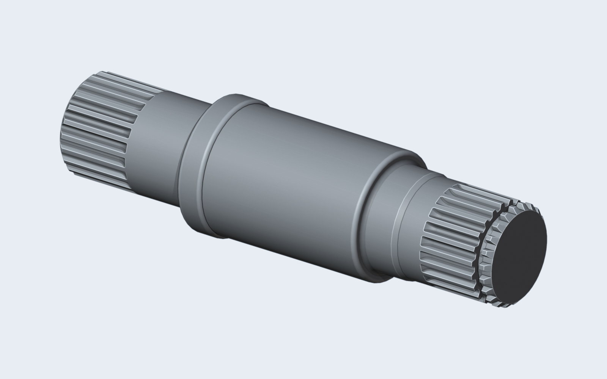
A stepped shaft with external splines at both ends. One end interfaces with the internally splined side gear; the other extends beyond the cover and collar.
Assigned project material: AISI 4140 - quenched and tempered. See selection basis and proposed condition.
How it was modeled
A revolve creates the stepped shaft. Two 22-instance circular patterns and a mirror produce the repeated spline geometry. Part3 is also referenced as a Stock feature in the construction of Part4 and Part5.
Assembly interfaces
Concentric with the cover and collar; coincident relationships connect it to Part5.
- Original source material
- Cast Carbon Steel
- Approximate local X × Y × Z envelope
- 116.50 × 32.00 × 32.00 mm
Inspect the source modeling features
| Source feature | API feature type |
|---|---|
| Revolve1 | Revolution |
| Cut-Extrude1 | ICE |
| Fillet1 | Fillet |
| Fillet2 | Fillet |
| Cut-Extrude2 | ICE |
| CirPattern1 | CirPattern |
| Cut-Extrude3 | ICE |
| Fillet3 | Fillet |
| Fillet4 | Fillet |
| CirPattern2 | CirPattern |
| Mirror1 | MirrorPattern |
| Fillet5 | Fillet |
Names and types come from the source feature tree. Sketches, reference planes, folders and repeated dimension listings are omitted from this compact view.
Component 04 / Part4 / Quantity 1
Side gear with integral splined stub
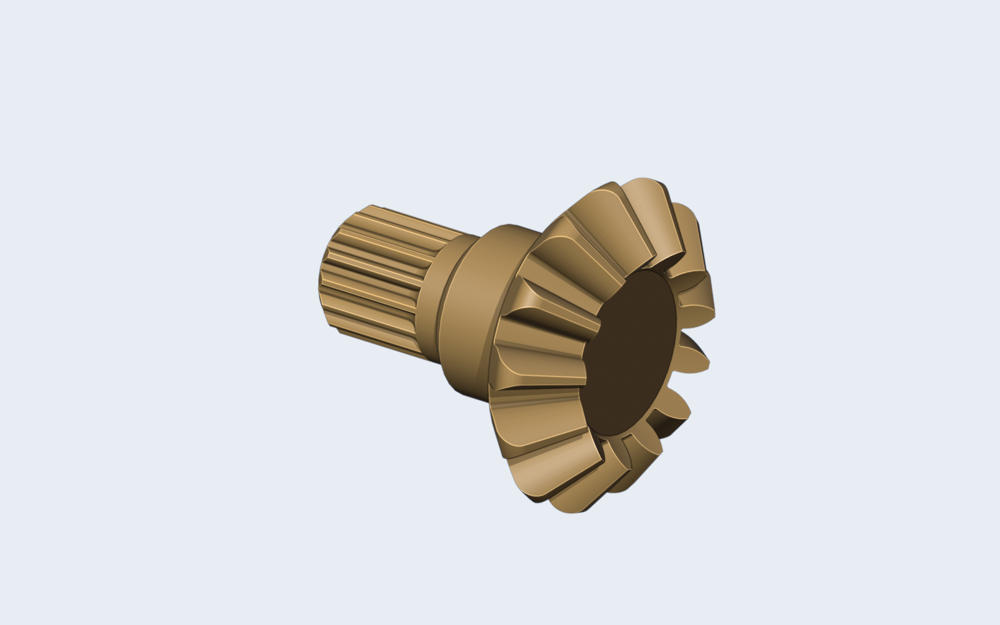
The first side gear combines a bevel-tooth form with a projecting external spline. Its journal is located by the housing, with the spacer positioned beside it.
Assigned project material: AISI 8620 - carburizing steel. See selection basis and proposed condition.
How it was modeled
Starts from an imported miter-gear body and a Part3 Stock feature. Move/Copy and Combine operations join the derived geometry. Subsequent cuts, bosses, chamfers, fillets and a 15-instance circular pattern refine the final part.
Assembly interfaces
Concentric with the housing and Part7. GearMate4 and GearMate6 couple it to the two transverse miter gears.
- Original source material
- Cast Carbon Steel
- Approximate local X × Y × Z envelope
- 58.10 × 57.76 × 58.19 mm
Inspect the source modeling features
| Source feature | API feature type |
|---|---|
| straight miter gear_iso-1-solid1 | BaseBody |
| Part3 | Stock |
| Body-Move/Copy1 | MoveCopyBody |
| Combine1 | CombineBodies |
| Cut-Extrude1 | ICE |
| Boss-Extrude1 | ICE |
| Boss-Extrude2 | ICE |
| Cut-Extrude2 | ICE |
| Fillet1 | Fillet |
| Fillet2 | Fillet |
| Chamfer1 | Chamfer |
| CirPattern1 | CirPattern |
| Fillet3 | Fillet |
| Fillet4 | Fillet |
Names and types come from the source feature tree. Sketches, reference planes, folders and repeated dimension listings are omitted from this compact view.
Component 05 / Part5 / Quantity 1
Internally splined side gear
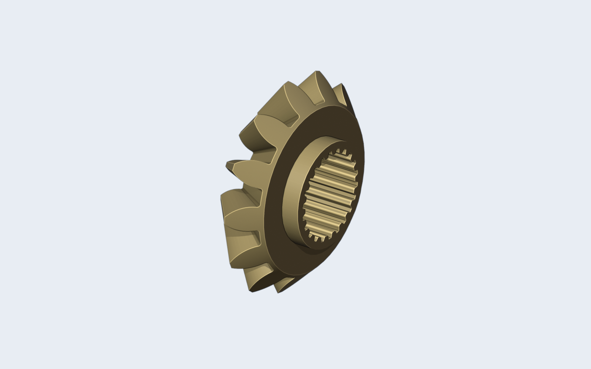
The opposing side gear has an internal spline around its bore. It engages the shaft geometrically and is located relative to the cover.
Assigned project material: AISI 8620 - carburizing steel. See selection basis and proposed condition.
How it was modeled
An imported miter-gear body and a Part3 Stock feature are positioned with Move/Copy and combined, followed by a cut. The internal spline is visible in the isolated rendering.
Assembly interfaces
Concentric and coincident with the cover; two coincident relationships to Part3. GearMate7 and GearMate8 connect it to the two miter gears.
- Original source material
- Cast Carbon Steel
- Approximate local X × Y × Z envelope
- 21.10 × 57.99 × 58.19 mm
Inspect the source modeling features
| Source feature | API feature type |
|---|---|
| straight miter gear_iso-1-solid1 | BaseBody |
| Part3 | Stock |
| Body-Move/Copy1 | MoveCopyBody |
| Combine1 | CombineBodies |
| Cut-Extrude1 | ICE |
Names and types come from the source feature tree. Sketches, reference planes, folders and repeated dimension listings are omitted from this compact view.
Component 06 / Part6 / Quantity 1
Dog coupling collar
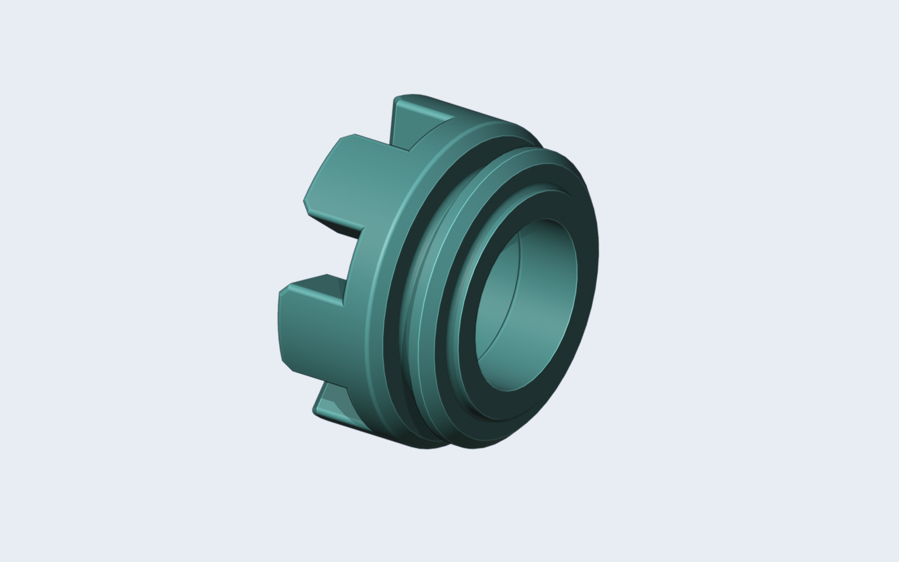
An annular collar with projecting dogs and circumferential grooves, positioned around the shaft beside the cover. Its form suggests a coupling or locking function; an actuator and a verified engagement sequence are not established by this review.
Assigned project material: AISI 4140 - quenched and tempered. See selection basis and proposed condition.
How it was modeled
A revolve defines the stepped annulus and grooves. A boss and six-instance circular pattern form the dog features; two chamfers and a fillet finish the edges.
Assembly interfaces
Concentric with Part3 and positioned by two coincident mates to Part2. These saved relationships do not by themselves demonstrate a sliding engagement operation.
- Original source material
- Not specified
- Approximate local X × Y × Z envelope
- 58.00 × 32.06 × 58.00 mm
Inspect the source modeling features
| Source feature | API feature type |
|---|---|
| Revolve1 | Revolution |
| Boss-Extrude1 | ICE |
| Chamfer1 | Chamfer |
| CirPattern2 | CirPattern |
| Chamfer2 | Chamfer |
| Fillet1 | Fillet |
Names and types come from the source feature tree. Sketches, reference planes, folders and repeated dimension listings are omitted from this compact view.
Component 07 / Part7 / Quantity 1
Annular spacer / thrust washer
A flat ring located between the housing and the stub-side gear. It establishes axial separation in the saved arrangement; its thrust-load capacity has not been calculated.
Assigned project material: C93200 bearing bronze. See selection basis and proposed condition.
How it was modeled
A sketched ring is formed by a thin extrusion. The model gives a 28 mm opening, 8 mm radial wall and 3.35 mm axial thickness, producing a 44 mm outside diameter.
Assembly interfaces
Concentric and coincident with Part4, and coincident with Part1.
- Original source material
- Not specified
- Approximate local X × Y × Z envelope
- 44.00 × 44.00 × 3.35 mm
Inspect the source modeling features
| Source feature | API feature type |
|---|
Names and types come from the source feature tree. Sketches, reference planes, folders and repeated dimension listings are omitted from this compact view.
Component 08 / straight miter gear_iso / Quantity 2
Transverse miter gear with stem
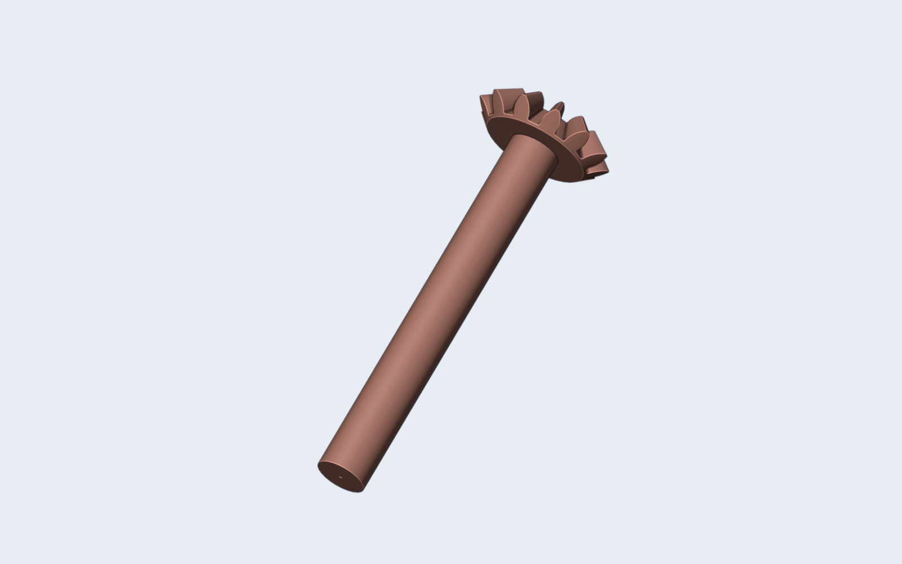
Two instances mesh visually with the side gears across the carrier. Each source part includes a long cylindrical stem; both stems are deliberately preserved in the presentation.
Assigned project material: AISI 8620 - carburizing steel. See selection basis and proposed condition.
How it was modeled
Toolbox configuration: ISO - Straight miter gear 2.75M12T 14.5PA 8FW ---12O13H120MD0.8N. The feature data includes a 16.5 mm pitch radius, 8 mm face width and 45-degree pitch angle. The configured name identifies 2.75 module, 12 teeth and 14.5-degree pressure angle.
Assembly interfaces
Each is located concentrically and coincidently to the housing and has gear mates to both side gears. The full configuration and saved mate values are recorded below.
- Original source material
- Not specified
- Approximate local X × Y × Z envelope
- 110.64 × 36.66 × 36.66 mm
Inspect the source modeling features
| Source feature | API feature type |
|---|---|
| Base-Revolve | Revolution |
| TeethCuts | CirPattern |
| Hub | Boss |
| Bore | Cut |
| Keyway | Cut |
| Keyway2 | CirPattern |
Names and types come from the source feature tree. Sketches, reference planes, folders and repeated dimension listings are omitted from this compact view.
Component 09 / hex flange bolt small_iso / Quantity 6
M6 flange bolt
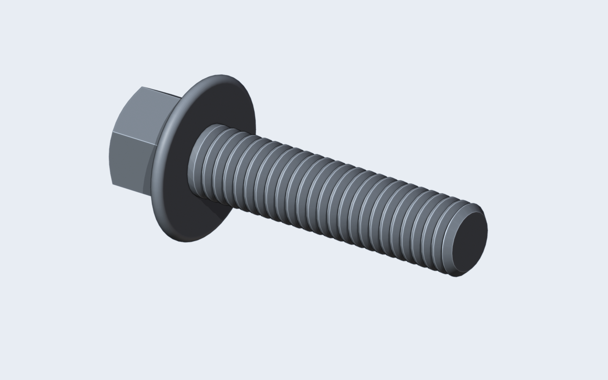
Six bolts are distributed around the housing flange to connect the two casing parts. The rendered model includes the heads, flanges and threaded shanks.
Assigned project material: Carbon steel - fastener baseline. See selection basis and proposed condition.
How it was modeled
Toolbox configuration: ISO 4162 - M6 x 25 x 25-S. This is the saved CAD designation; strength class, tightening torque and joint preload are not specified in this documentation.
Assembly interfaces
Each bolt is concentric and coincident to Part1.
- Original source material
- Not specified
- Approximate local X × Y × Z envelope
- 31.80 × 13.60 × 13.60 mm
Inspect the source modeling features
| Source feature | API feature type |
|---|---|
| BaseBody | Revolution |
| Flange | Revolution |
| FlangeHexFillet | Fillet |
| HeadFillet | Fillet |
| ThdSchPat | LPattern |
Names and types come from the source feature tree. Sketches, reference planes, folders and repeated dimension listings are omitted from this compact view.
Component 10 / hex flange nut gradea_iso / Quantity 6
M6 flange nut
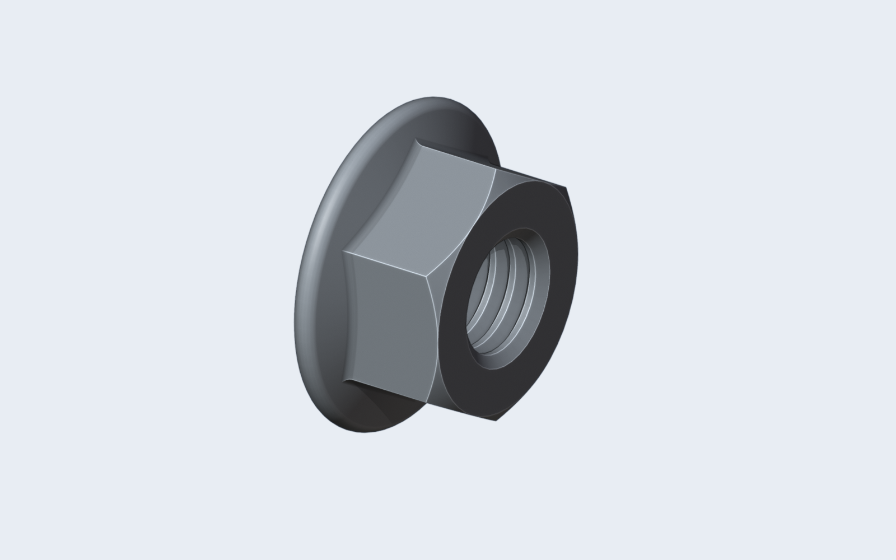
Six flange nuts complete the casing joint on the cover side. The isolated view shows the hexagonal exterior, flange and internal thread geometry.
Assigned project material: Carbon steel - fastener baseline. See selection basis and proposed condition.
How it was modeled
Toolbox configuration: ISO - 4161 - M6 - S. The saved configuration identifies the nominal size; it does not establish a verified bolt-joint design.
Assembly interfaces
Each nut is concentric and coincident to Part2.
- Original source material
- Not specified
- Approximate local X × Y × Z envelope
- 14.20 × 14.20 × 6.00 mm
Inspect the source modeling features
| Source feature | API feature type |
|---|---|
| Flange | Revolution |
| FlangeFillet | Fillet |
| ThdSchPat | LPattern |
Names and types come from the source feature tree. Sketches, reference planes, folders and repeated dimension listings are omitted from this compact view.
How the components come together.
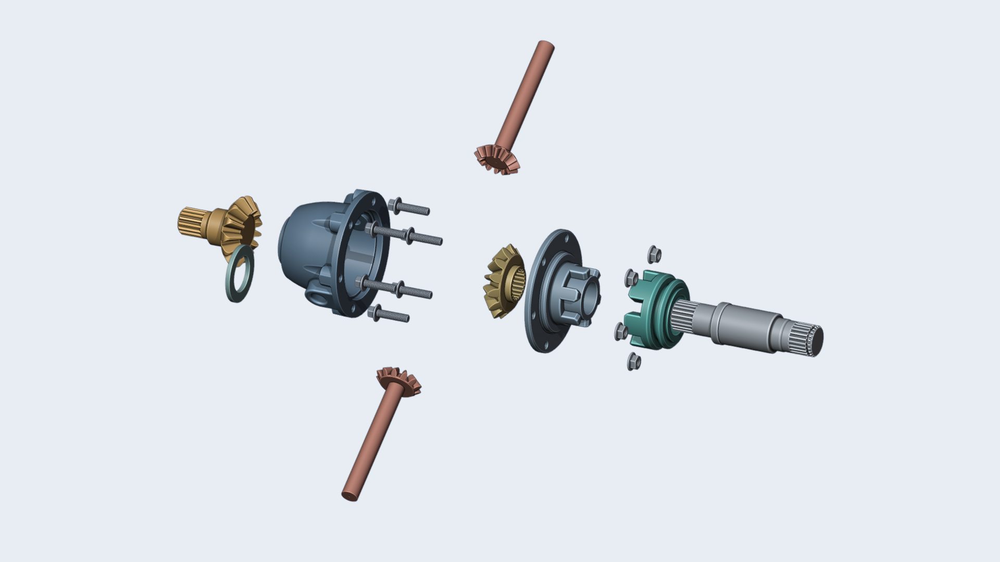
- Locate the gear set. The housing provides the references for the stub-side gear, spacer and two transverse gear stems.
- Connect the shaft-side parts. The internally splined side gear is associated with Part3 and located relative to the cover. The collar is concentric with that shaft.
- Close the housing. The cover shares the housing axis and is axially located with a coincident relationship.
- Complete the flange joint. Six bolts are located to the housing and six nuts to the cover. Their geometry appears in both the full assembly and exploded view.
This sequence explains the CAD relationships; it has not been checked for physical insertion paths, tool access or a production build sequence.
| Mate family | Count | Recorded role |
|---|---|---|
| Concentric | 21 | Align cylindrical axes of casing parts, shaft, gears and fasteners |
| Coincident | 22 | Locate faces or reference entities |
| Gear | 4 | Apply saved ratio relationships between the side and transverse gears |
Inspect all 47 recorded mates
| Mate | Type | Component instances |
|---|---|---|
| Concentric3 | Concentric | Part1-1 / Part2-1 |
| Concentric4 | Concentric | Part1-1 / Part2-1 |
| Concentric5 | Concentric | Part5-1 / Part2-1 |
| Coincident2 | Coincident | Part5-1 / Part2-1 |
| Concentric7 | Concentric | Part2-1 / Part3-1 |
| Coincident3 | Coincident | Part5-1 / Part3-1 |
| Coincident4 | Coincident | Part5-1 / Part3-1 |
| Concentric8 | Concentric | Part3-1 / Part6-2 |
| Coincident5 | Coincident | Part2-1 / Part6-2 |
| Coincident6 | Coincident | Part2-1 / Part6-2 |
| Concentric10 | Concentric | Part1-1 / Part4-2 |
| Concentric11 | Concentric | Part7-1 / Part4-2 |
| Coincident10 | Coincident | Part7-1 / Part4-2 |
| Coincident11 | Coincident | Part1-1 / Part7-1 |
| Concentric12 | Concentric | Part1-1 / straight miter gear_iso-1 |
| Coincident12 | Coincident | Part1-1 / straight miter gear_iso-1 |
| Concentric13 | Concentric | Part1-1 / straight miter gear_iso-2 |
| Coincident13 | Coincident | Part1-1 / straight miter gear_iso-2 |
| GearMate4 | GearDim | Part4-2 / straight miter gear_iso-1 |
| GearMate6 | GearDim | straight miter gear_iso-2 / Part4-2 |
| Coincident14 | Coincident | Part1-1 / Part2-1 |
| GearMate7 | GearDim | Part5-1 / straight miter gear_iso-1 |
| GearMate8 | GearDim | Part5-1 / straight miter gear_iso-2 |
| Concentric17 | Concentric | Part1-1 / hex flange bolt small_iso-8 |
| Coincident16 | Coincident | Part1-1 / hex flange bolt small_iso-8 |
| Concentric18 | Concentric | Part1-1 / hex flange bolt small_iso-9 |
| Coincident17 | Coincident | Part1-1 / hex flange bolt small_iso-9 |
| Concentric19 | Concentric | Part1-1 / hex flange bolt small_iso-10 |
| Coincident18 | Coincident | Part1-1 / hex flange bolt small_iso-10 |
| Concentric20 | Concentric | Part1-1 / hex flange bolt small_iso-11 |
| Coincident19 | Coincident | Part1-1 / hex flange bolt small_iso-11 |
| Concentric21 | Concentric | Part1-1 / hex flange bolt small_iso-12 |
| Coincident20 | Coincident | Part1-1 / hex flange bolt small_iso-12 |
| Concentric22 | Concentric | Part1-1 / hex flange bolt small_iso-13 |
| Coincident21 | Coincident | Part1-1 / hex flange bolt small_iso-13 |
| Concentric24 | Concentric | Part2-1 / hex flange nut gradea_iso-3 |
| Coincident23 | Coincident | Part2-1 / hex flange nut gradea_iso-3 |
| Concentric25 | Concentric | Part2-1 / hex flange nut gradea_iso-4 |
| Coincident24 | Coincident | Part2-1 / hex flange nut gradea_iso-4 |
| Concentric26 | Concentric | Part2-1 / hex flange nut gradea_iso-5 |
| Coincident25 | Coincident | Part2-1 / hex flange nut gradea_iso-5 |
| Concentric27 | Concentric | Part2-1 / hex flange nut gradea_iso-6 |
| Coincident26 | Coincident | Part2-1 / hex flange nut gradea_iso-6 |
| Concentric28 | Concentric | Part2-1 / hex flange nut gradea_iso-7 |
| Coincident27 | Coincident | Part2-1 / hex flange nut gradea_iso-7 |
| Concentric29 | Concentric | Part2-1 / hex flange nut gradea_iso-8 |
| Coincident28 | Coincident | Part2-1 / hex flange nut gradea_iso-8 |
Keep the saved gear relationships visible.
The model has two opposing side gears and two transverse miter gears. Its saved gear mates contain the following numerator and denominator values, reported exactly as returned by the API. They express ratios; the numbers should not be read as tooth counts.
| Saved mate | Component instances | Numerator : denominator | Reverse |
|---|---|---|---|
| GearMate4 | Part4-2 / straight miter gear_iso-1 | 0.012 : 0.013 | False |
| GearMate6 | straight miter gear_iso-2 / Part4-2 | 0.013 : 0.012 | False |
| GearMate7 | Part5-1 / straight miter gear_iso-1 | 0.012 : 0.014 | False |
| GearMate8 | Part5-1 / straight miter gear_iso-2 | 0.012 : 0.014 | False |
The Part4 pair uses reciprocal 12:13 and 13:12 values with reversed component ordering; the Part5 pair uses 12:14. These are different relationships and are retained rather than replaced with an assumed equal-ratio differential. The source configuration name and these mate values are separate pieces of evidence.
A traceable review of the source CAD.
- Read the native assembly. Opened the supplied assembly and part documents through the SolidWorks API without saving changes to the source. Resolved the three externally referenced Toolbox definitions on the local machine.
- Inspect structure and geometry. Recorded component configurations, transforms, solid-body counts, feature trees, dimensional values and assembly mates. Each of the ten distinct part definitions contains one solid body.
- Preserve placements. Applied the component transforms to each part's tessellated geometry. Converted model coordinates from meters to millimeters and changed display axes for rendering.
- Build the presentation. Reused the extracted geometry in Blender, added component colors, and framed the complete assembly and individual parts. Exploded offsets and hidden-component views were created for illustration.
- Publish documentation assets. The portfolio contains the report, rendered images, film, captions and component schedule. Native CAD references, audit tables and rendering scripts are retained in the separate local project.
Final repository verification: all 21 component instances and recursive CAD dependencies resolve inside the local project. All ten definitions have the assigned material, their solid volumes match the source within numerical precision, and the assembly retains 47 mates including four gear mates.
Graphics tessellation approximates curved CAD surfaces. These renders and bounding boxes support communication, not machining or metrology. The extraction completed without file-load errors; read-only and already-open warnings were recorded. This is not a complete rebuild, interference or manufacturing validation.
API references: IPartDoc.GetTessTriangles and IMathTransform.ArrayData.
What the model establishes—and what comes next.
The project demonstrates revolved and patterned parts, imported and derived geometry, multibody combination, repeated fasteners and a constrained mechanical assembly. The new documentation makes those decisions visible through every component and its assembly interfaces.
Before treating this as a production gearbox, the next engineering steps would be to reconcile the gear definitions and mate ratios, solve and inspect the intended motion, check tooth contact and clearances, specify fits and tolerances, verify the assigned material grades and heat treatments, and assess shaft, gear, bearing and bolted-joint loads. Bearings, seals, lubrication and an input-drive interface also require an explicit design basis.
Project credits
SolidWorks project by Mahmoud Samhoud. The assembly uses the locally referenced SolidWorks Toolbox gear and fastener definitions identified in this report. Rendered illustrations and the assembly film were prepared from the supplied CAD for this portfolio.